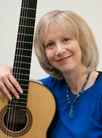

-
Lynn Ware  A specialist with young children, Lynn blends warmth, fun and encouragement with high technical expectations. Her guitar students won 1st prizes in all categories entered in the 2013 North York Arts Festival, prompting the director to award trophies to the “best junior guitarist” (Nicolas Lee) and “best senior guitarist” (Kevin Gai). Lynn’s student Helen Lu won the CMC competition for guitar in the under 16 category, while Kevin Gai received the highest mark for string ensemble performance in the Kiwanis Music Festival (Vivaldi Concerto in D Major). With 28 years of experience, her students have received Silver Medals (highest grades in Canada) from the RCM.
As a guitarist, Lynn performed for artists/teachers in master classes including Oscar Ghiglia, Alice Artzt, Sergio Abreu, Eduardo Fernandez and Turibio Santos. Eli Kassner was most influential in shaping her technical development. As a young performer, she premiered many 20th century American and Canadian compositions. She has composed and recorded her own compositions on her 5 CDs including The Many Moods of the Guitar, Impossible Dream, Forest Scenes, Angelica and Americas (includes Variations on O Canada!)
Peter and Lynn Ware opened Ware Academy of Music in 2001 as a private practice in the Market Village. With over 30 years teaching experience, they continue to prepare students for theory and instrumental examinations at the Royal Conservatory of Music (RCM). Their theory students have achieved the highest RCMusic theory grades in Canada.